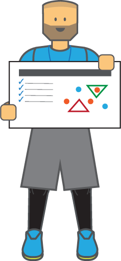
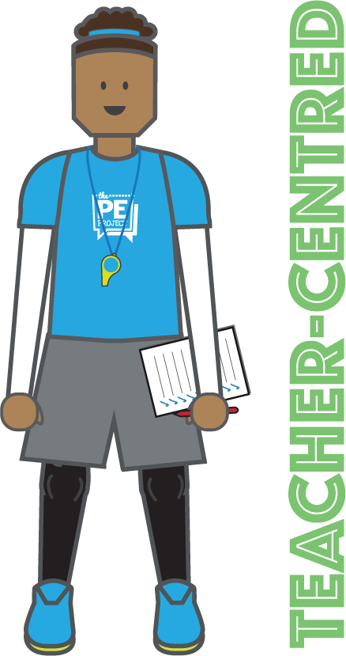
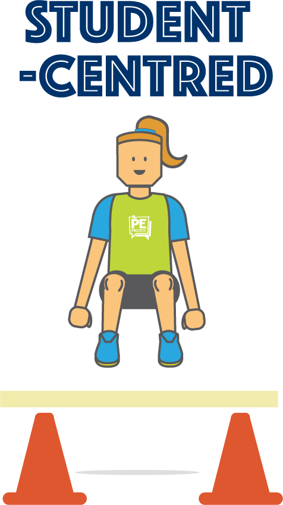

As a Physical Education teacher it is extremely beneficial to have a strong understanding of the different teaching styles as they allow you to:
- cater for the different ways pupils learn;
- allows students to learn all the concepts, processes and skills inherent to physical education;
- eliminates monotony in the delivery of PE lessons; and
- are useful for planning how students will achieve a given learning objective [1-4]
The spectrum of teaching styles were first designed by Mosston and Ashworth as they designed a cohesive framework to serve as a guide for physical education teachers. It consists of 11 different teaching styles, five teacher-centered (aka reproductive/direct) and six student-centered (aka productive/indirect). Collectively they allow for many approaches to teaching and learning such as behaviourist, cognitive, social constructivist, peer teaching, peer assessment, and self-assessment. In the table below all eleven teaching styles are categorized and described.
Didactic style where the teacher makes all the decisions, it is often described as teacher-directed and autocratic. Students respond immediately to the stimulus or model provided by the teacher. This style is best used when safety is paramount or time is of the essence, and when fast responses and replication of skills is required. For example, a synchronized warm-up where the students follow the teacher [5-7].
Teacher demonstrates the task and sets up the opportunity for learners to practice and develop skills at their own pace. As pupils carry out the prescribed tasks, the teacher will circulate the class giving individual and group feedback. For example, teacher demonstrates how to perform a jump-shot in basketball. As students practice their shooting technique, the teacher will go around the class giving feedback [5-7].
Students work together in pairs and take turns observing and giving feedback to each other using performance criteria or a skill card which was provided by the teacher. As students are completing the task, the teacher will circulate the group and provide feedback to and through the observer. For example, students are in pairs using a skill card on how to perform a ‘dig’ in volleyball and take turns coaching each other. Meanwhile, the teacher moves among the class giving feedback through the student coaching [5-7].
Similar to the ‘Reciprocal Style’, except students work on their own. Teacher provides pupils with the performance criteria/skill card which includes a visual reference for fault correction. This style allows students to practice and self-correct in their own time and evaluate their own learning. The teacher circulates the class and works in conjunction with students to set targets and goals [5-7].
Teacher plans and sets out a variety of tasks which has differentiated levels of difficulty. Pupils decide which task is most appropriate for their abilities and motivations. This style provides a personalized and developmental approach to learning [5-7].


Teacher plans a series of questions and tasks that direct students towards discovering a pre-determined answer to the problem or learning target. This conceptual approach to learning allows pupils to be involved in the convergent process of thinking about a particular movement problem or tactical concept [5-7].
Similar to ‘Guided Discovery’, except the teacher sets or frames a question or problem which has numerous solutions (instead of one). Students control the process of learning by using trial, error and logic in order to discover alternative answers to the posed question/problem [5-6].
This style is a progression from ‘convergent discovery’. Again the teacher plans and sets a question or challenge for students which has numerous possible solutions. However, once learners have solved one problem, the solution should pose a subsequent problem that needs to be solved. This style has been recognized as an excellent approach when teaching games tactics, gymnastics, dance and OAA [5-7].
Teacher decides on an area of focus which the student has to develop by devising their own questions and then seeks to find the answers. Pupils engaging in this style should have good subject knowledge and creativity, experience in the other teaching styles, and proven themselves as independent in their learning. The students can draw on the teachers expertise if needed [5, 6].
Similar to the ‘learner designed’ style except the pupil decides on the initial area of focus and designs their own learning program in relation to their cognitive and practical ability. The pupil meets periodically with the teacher to discuss their progress or when needed [5-7].
This is the epitome of independent learning as pupils take full responsibility for their own development and the learning process [5-7].

It is important to highlight that there is not a preferred teaching style, nor are lessons taught entirely with one teaching style [7, 8]. Rather, it is encouraged that teachers use a range of approaches in their lesson and unit plans, as one particular style may best suit particular tasks. For example, a command style may be deemed safest and best practice for teaching students how to throw a javelin. Whereas, a guided discovery approach may be more advantageous if the learning objective is to develop social skills [2].
It has been suggested that pupil-centered approaches are more beneficial as they require students to be more independent and involved in the decision making process. However, if students haven’t developed independent learning skills previously in PE lessons it would be beneficial to lead them through the spectrum of teaching styles, starting with the teacher-centered approaches and then progressing on to the pupil-centered styles.
References
- Department of Education and Science (DES) (1985) Education Observed, 3: Good Teachers. London: HMSO.
- Mawer, M. (1999) Teaching Styles and Teaching Approaches in Physical Education: Research Developments. In Hardy, C., Mawer, M. (Ed.), (1999) Learning and Teaching in Physical Education Falmer Press
- Salvara, M., Jess, M., Abbot, A. & Bognar, J. (2006) A preliminary study to investigate the influence of different teaching styles on pupils’ goals orientations in physical education. European Physical Education Review. 12(1): 51-74
- Grout, H. & Long, G. (2009) Improving Teaching & Learning in Physical Education. Berkshire: Open University Press.
- Mosston, M., Ashworth, S. (1994) Teaching Physical Education. Ohio: Merrill.
- Mosston, M., & Ashworth, S. (2002) Teaching physical education. (5th ed.), Boston: Benjamin Cummings. (United States).
- Mosston, M., & Ashworth, S. (2008) Teaching physical education: First online edition. Spectrum Institute for Teaching and Learning. (United States). [E-Book Download]
- Blair, R. & Whitehead, M. (2015) Designing teaching approaches to achieve intended learning outcomes. In Capel, S. & Whitehead, M (Ed) Learning to Teach Physical Education in the Secondary School: A Companion to School Experience. 4th Edition. London: Routledge.